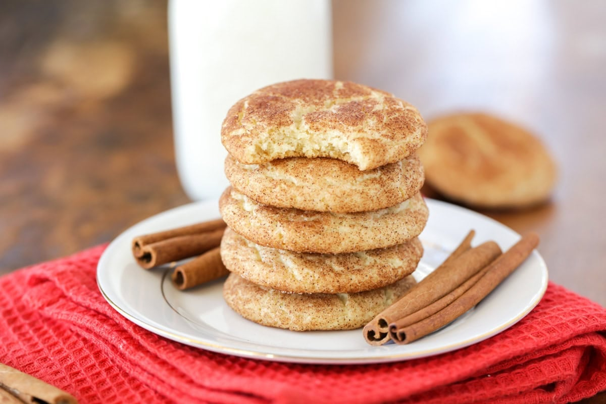

Home
Snickerdoodle

Description
A snickerdoodle is a cookie rolled in cinnamon sugar.
Ingredients
- 2 3/4 cups flour
- 2 teaspons cream of tartar
- 1 teaspoon baking soda
- 1/2 teaspoon salt
- 1 cup unsalted butter, slightly softened
- 1/2 cup whipped honey with cinnamon
- 1 1/3 cup sugar
- 1 egg yolk
- 1 teaspoon vanilla extract
- 2 tablespoons cinnamon
Steps
- Preheat oven to 350, prepare baking sheets with tinfoil.
- In large bowl, mix together flour, cream of tartar, baking soda, salt.
- In another large bowl, mix butter, honey, 1 cup sugar until light and fluffy. Then, add eggs and vanilla extract.
- Add dry ingredients to wet ingredients and mix.
- Ins mall bowl, combine remaining 1/3 cup sugar and cinnamon.
- Create balls with the cookie dough (about 2 teaspoons) and roll throughougly through the smaller bowl mixture.
- Bake for 9-10 minutes.
- Use reamaining small bowl mixture to top cookies.